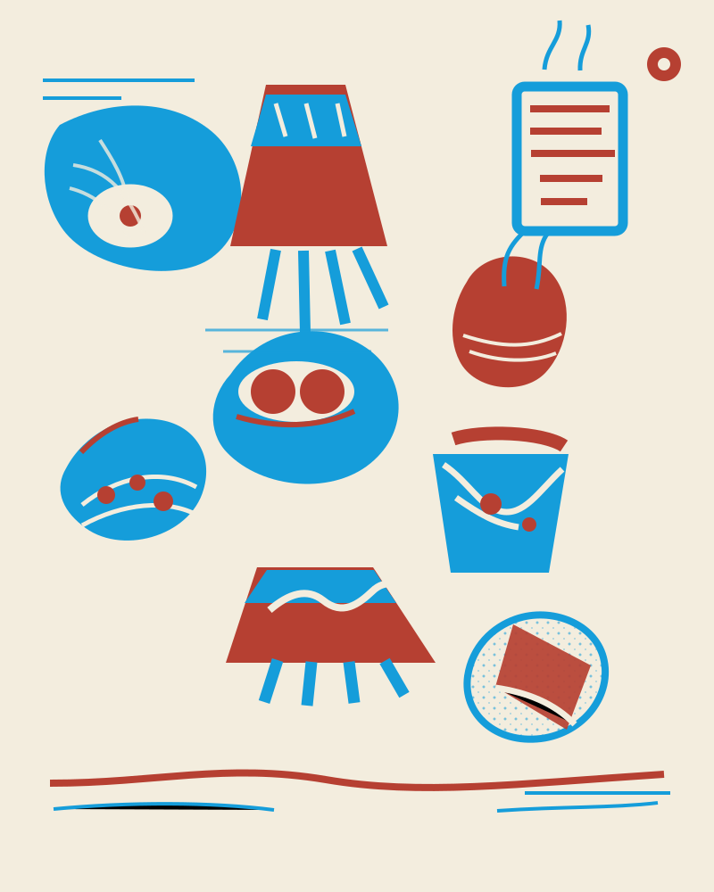
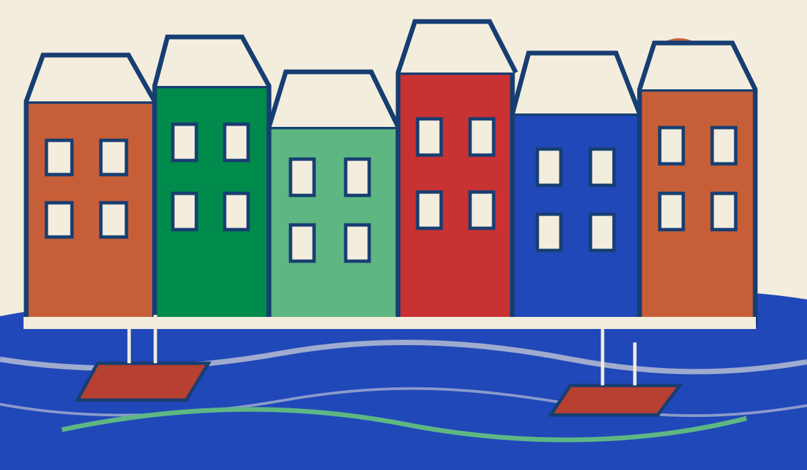
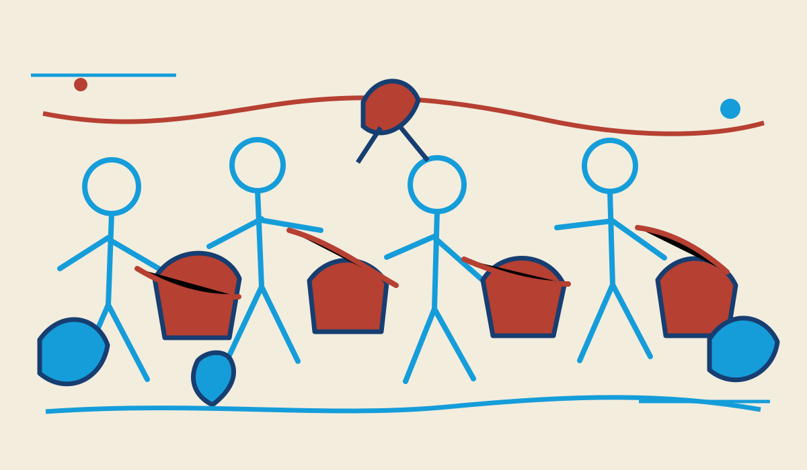

a place for the curious
Try the impossible on a plate.
open:heart is a vegetarian place for original plant-based creations. Start with vegan eggs Benedict, stay for the feeling that imagination can become something real, generous, and delicious.

slow mornings
bright plates
good company
creation is the point
A new idea can be
something you taste.
We believe the human mind can connect with something deeper through making and sharing. A plate can be a small proof that care, curiosity, and invention are worth following.
a little wonder, served warm
a copenhagen point of view
A little room
for the city.
Maybe a corner near the water. Maybe a neighborhood street where the first bike bell meets the smell of toast. The address is still a question.
COPENHAGENCPH / 55°40'N

made for passing it on
Bring your people.
Bring your dog.
A table can be a small public square. A place for neighbors, early birds, visiting friends, and the animal who always gets the last fry.

not open yet
Help us find
the right morning.
Tell us what would make you leave the house for breakfast. We are collecting small clues before we choose a street, a room, or a date.
No spam. Just a note when the idea moves.